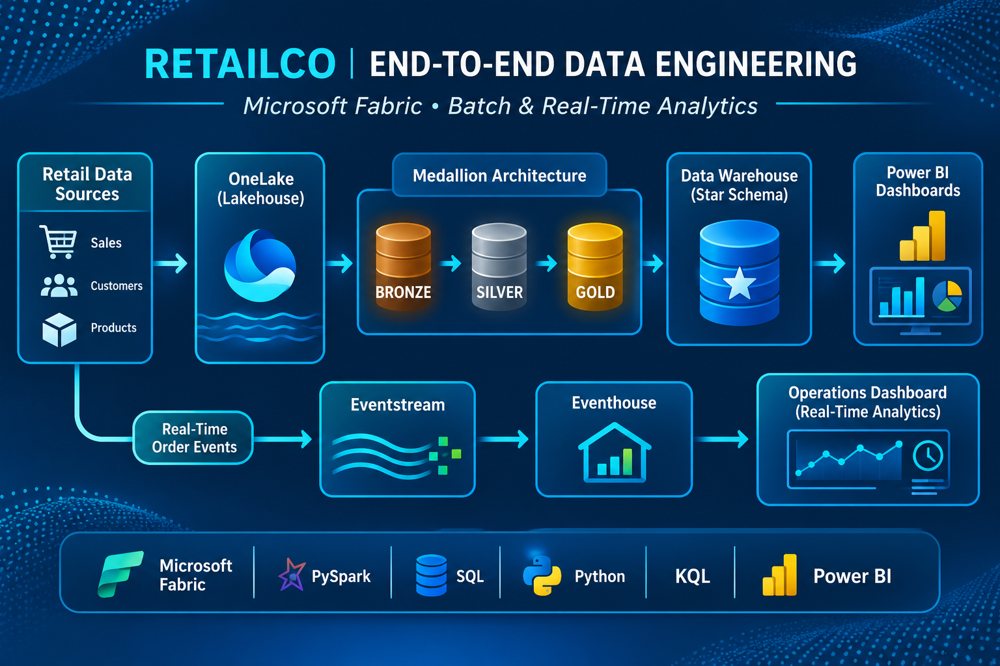

Building data pipelines, developing analytics solutions, and transforming data into meaningful business insights.
Explore My ProjectsI am a data professional with over four years of experience in data analytics, reporting, data validation, and technical problem-solving. My technical experience includes SQL, Python(Pyspark), Power BI, Azure, and Microsoft Fabric.
I hold a Post-Graduate Diploma in Data Analytics from SAIT with a GPA of 4.0 and am a Microsoft Certified Fabric Analytics Engineer Associate (DP-600), with an exam score of 838/1000. I enjoy building reliable data solutions and using analytics to support better business decisions.
Calgary, Canada | 2021 – 2026
Calgary, Canada | 2026
Built an end-to-end retail data engineering solution using Microsoft Fabric, transforming raw data into trusted analytical datasets and real-time business insights.

Email: rimzanmha@gmail.com